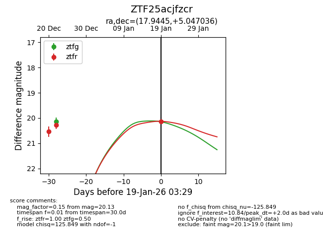
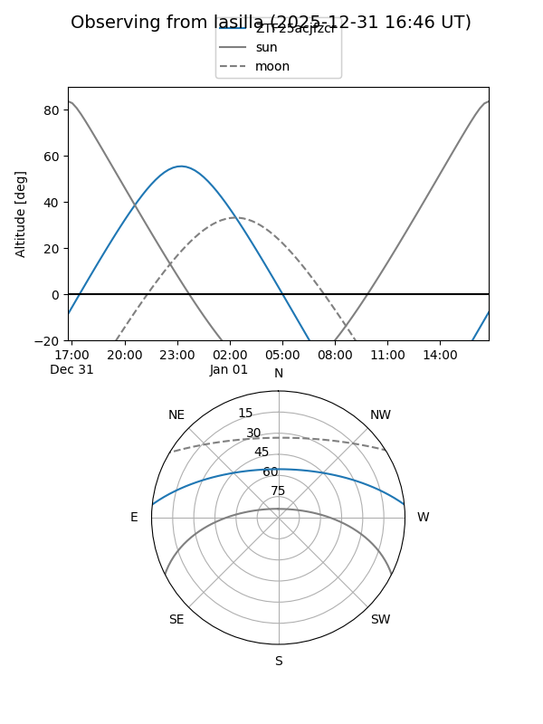
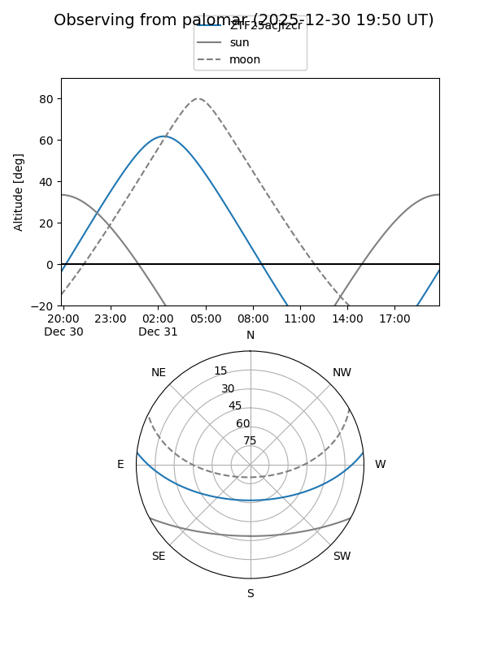
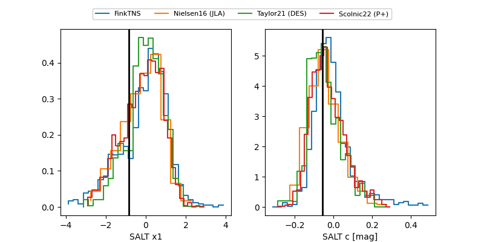

ZTF25acjfzcr
Target ZTF25acjfzcr at 2025-12-22 14:51
Aliases and brokers:
FINK: fink-portal.org/ZTF25acjfzcr
Lasair: lasair-ztf.lsst.ac.uk/objects/ZTF25acjfzcr
ALeRCE: alerce.online/object/ZTF25acjfzcr
alt names
ZTF25acjfzcr (ztf,fink_ztf)
Coordinates:
equatorial (ra, dec) = 17.9445,+5.04704
equatorial (HMS+DMS) = 01:11:46.68,+05:02:49.33
galactic (l, b) = (132.3771,-57.45122)
Flags:
Photometry:
last ztfg=20.13, ztfr=20.28
1 ztfg, 2 ztfr detections
Lightcurve

Visibility


Additional plots
